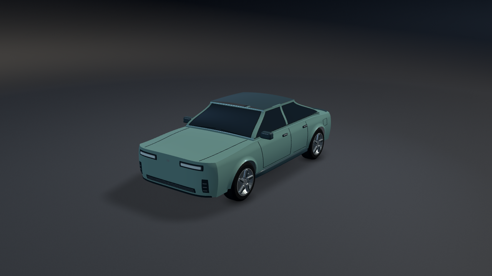
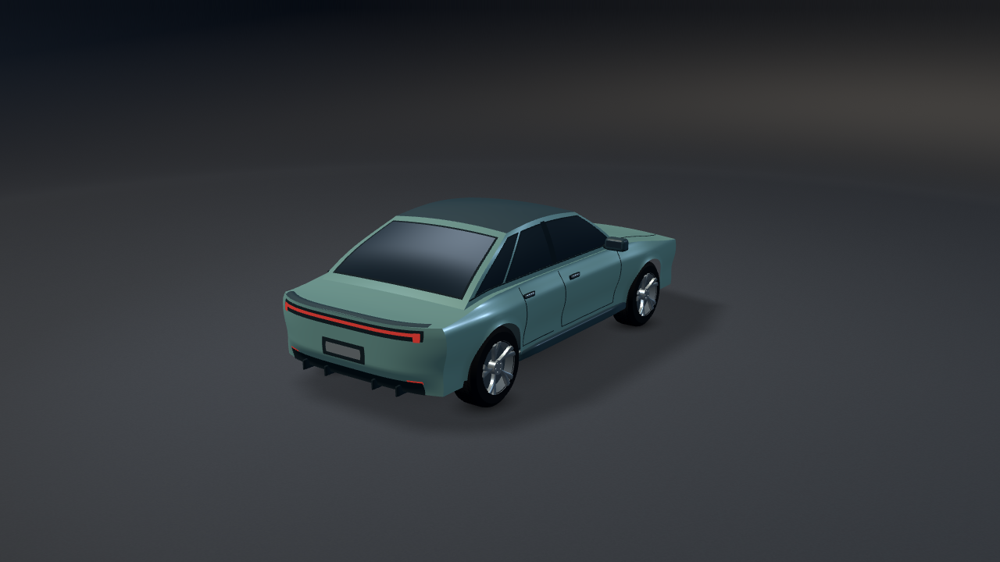
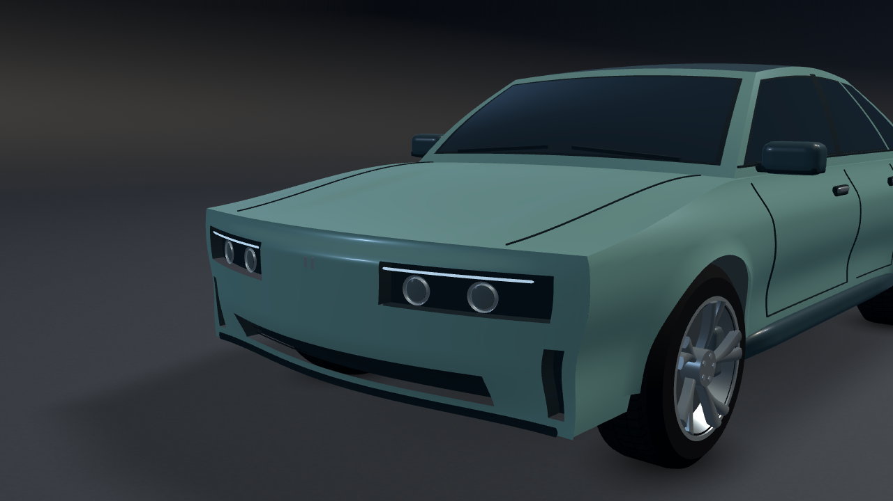
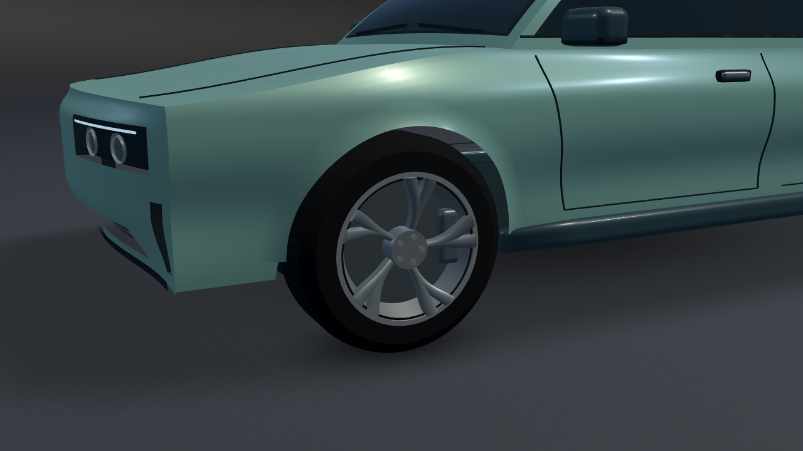
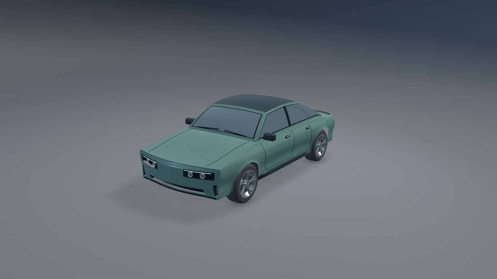
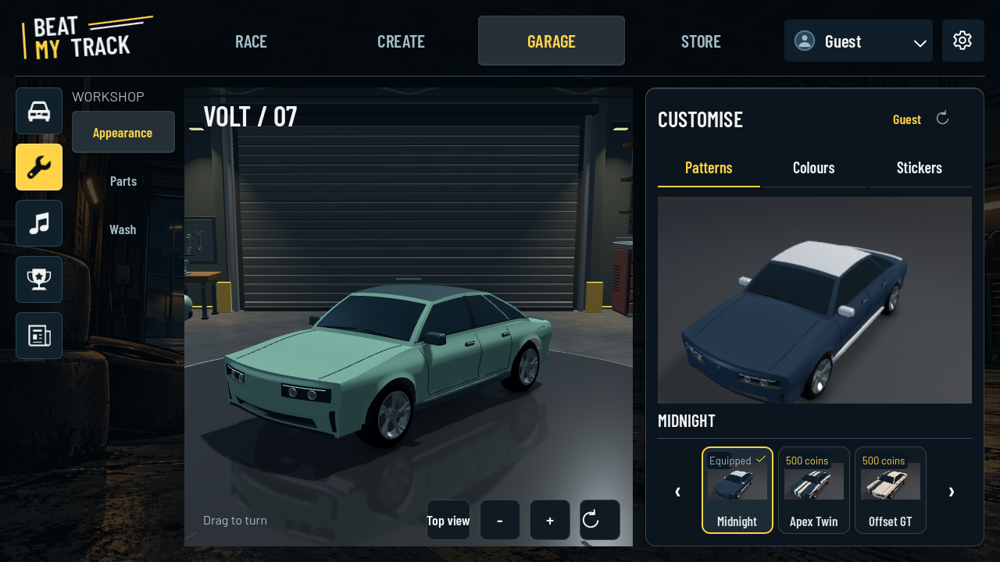
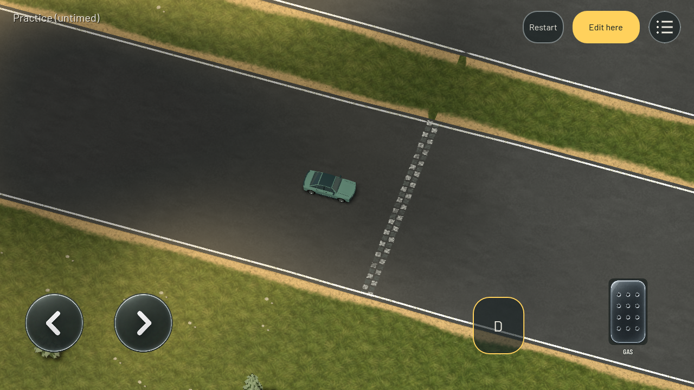
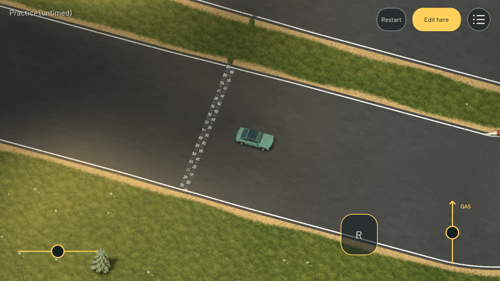
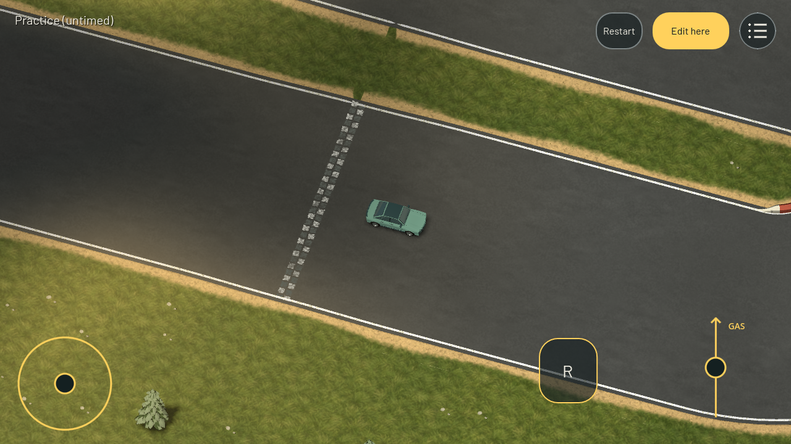

Native Godot captures. One accelerator; D/R occupies the saved brake position. Full lift stops from 72 km/h in 1.8 seconds / 17.842 metres on the flat-road fixture, then holds at zero. Owner quality/driving acceptance and physical-device testing remain.
Validation and source hashes ? Implementation and limits








